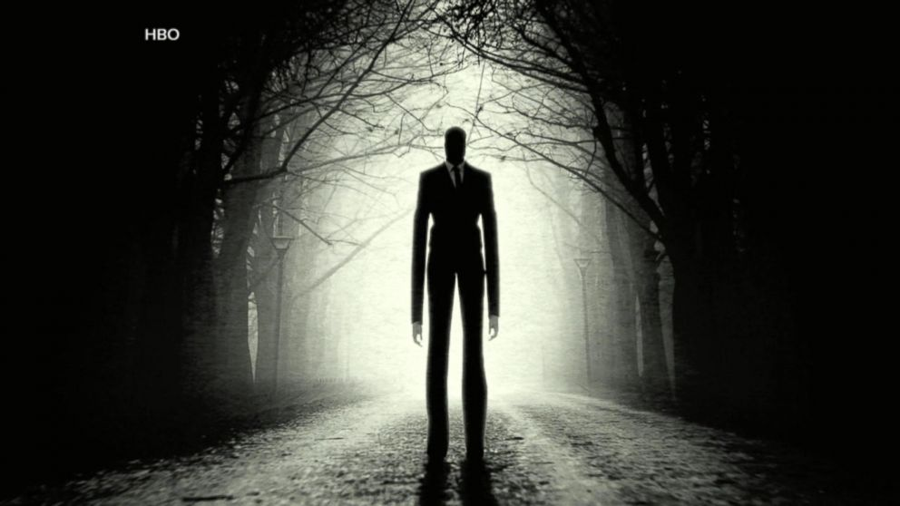

Slender Man

Every generation creates its own monsters. Folk tales tell of witches and wyrms in the woods, my TV-infused generation feared Jaws in lakes and Bloody Mary in the mirror. This generation gets its monsters from the Internet.
Slenderman is a pure product of electronic media. He appears in places we rarely frequent, these days – abandoned, crumbling halls, deep woods, a playground with a rickety steel jungle gyms. He is a suburban ghoul with his own history and his own methodology and, of late, he has become the object of controversy due to an attack in Wisconsin during which two girls stabbed another in order to appease Slenderman’s dark needs. It was a horrible story and it underlies how little we understand about the psychology of a generation weaned on the Internet and how images can morph from fiction to fact in the course of half a decade.
Slenderman’s origin is surprisingly clear. Unlike most urban legends, we can trace his provenance with absolute certainty. He was born on June 8, 2009, on a forum site frequented by Photoshop pranksters. He belongs to a guy in Florida named Eric Knudsen who has a young daughter and is surprised as much as anything that his demon hasn’t yet been thrown onto the slag heap of forgotten memes. An entire history, an entire corpus, has grown up around him in a way that would have been impossible a decade ago.
He is the first pure product of the Internet, a demon spawned not out of a specific place but out of bits. Here’s some of his story.Slenderman first appeared on the SomethingAwful forums under a thread titled “Create Paranormal Images.” One user, Slidebite, said “You just know a couple of the good ones are going to eventually make it to paranormal websites and be used as genuine.” He was right. The first image of Slenderman- of a tall, out-of-focus figure, next to a tree – was accompanied by a bit of text that sounds like the dialogue from a badly-translated horror game.